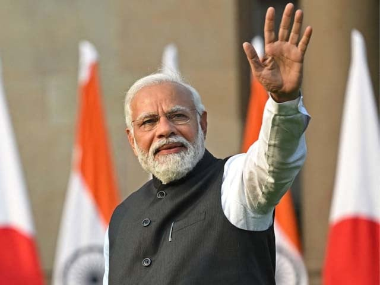

Narendra Damodardas Modi

14th Prime Minister of India
-
Narendra Damodardas Modi was born on 17 September 1950 to a Gujarati Hindu family of grocers in Vadnagar, Mehsana district, Bombay State (present-day Gujarat).
-
He was the third of six children born to Damodardas Mulchand Modi and Hiraben Modi.
-
When Modi was eight years old, he was introduced to the Rashtriya Swayamsevak Sangh (RSS) and began attending its local shakhas (training sessions).
-
There, he met Lakshmanrao Inamdar, who inducted Modi as a balswayamsevak (junior cadet) in the RSS and became his political mentor.
-
While Modi was training with the RSS, he also met Vasant Gajendragadkar and Nathalal Jaghda, Bharatiya Jana Sangh leaders who in 1980 helped found the BJP's Gujarat unit.
-
Shree Narendra Modi is an Indian politician who has served as the 14th prime minister of India since May 2014.
-
Modi was the chief minister of Gujarat from 2001 to 2014 and is the Member of Parliament (MP) for Varanasi.
-
He is a member of the Bharatiya Janata Party (BJP) and of the Rashtriya Swayamsevak Sangh (RSS), a right wing Hindu nationalist paramilitary volunteer organisation.
-
He is the longest-serving prime minister from outside the Indian National Congress.